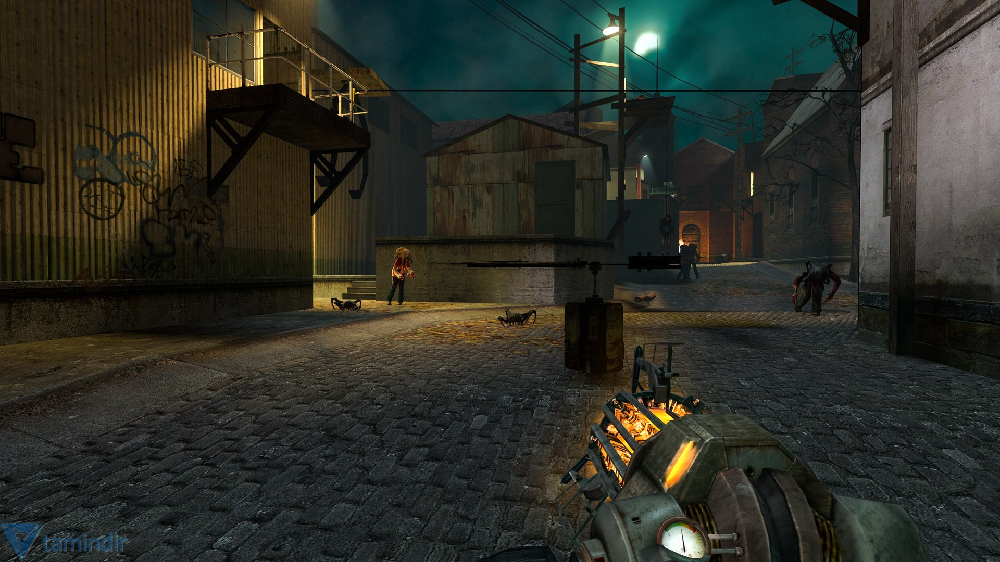
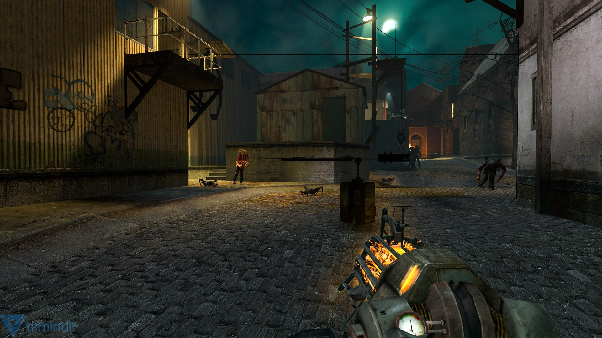

Half Life 2, ilk oyuna selam olsun der gibi, bir trenin içersinde başlıyor. Bu arada meşhur “G-Man”in “sana tekrar ihtiyacımız var Gordon” mealli konuşmasını flashback’ler eşliğinde izliyorsunuz. Trenden indiğinizde, 1984 dünyası bekliyor sizi. Tek tip elbiseler giymiş insanlar, büyük ekranlardan “uslu durun” anlamlı konuşmalar yapan bir big brother yüzü (ki kendisi Dr.Breen oluyor) ve korkutucu elbiseler giymiş askerler.. Sorgulanmak üzere bu askerlerden biri tarafından bir odaya götürülüyorsunuz ki o da ne, Barney! İlk oyundaki güvenlik görevlisi aramızda.
 
